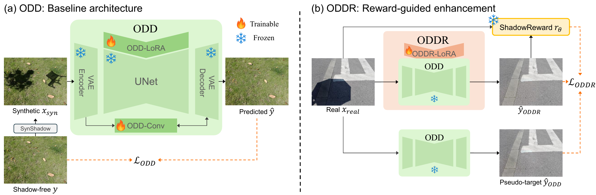
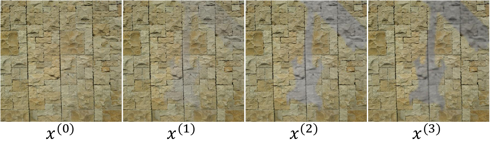
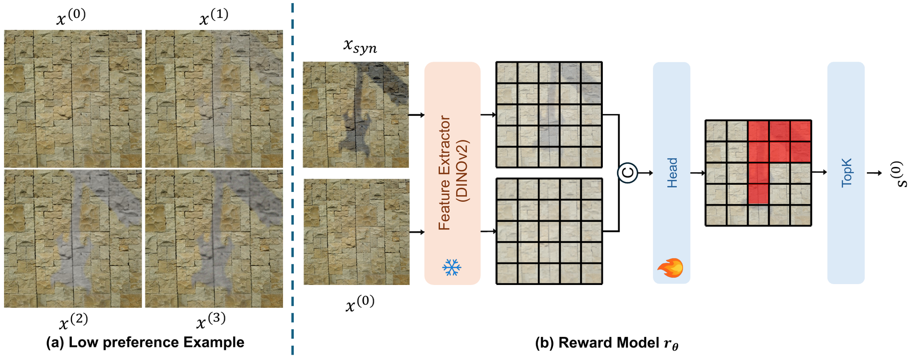
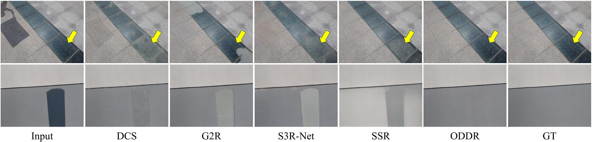
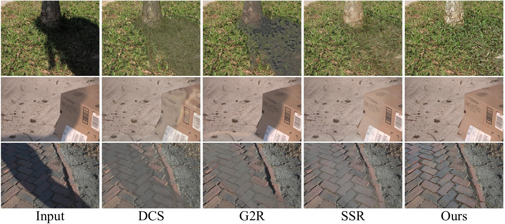
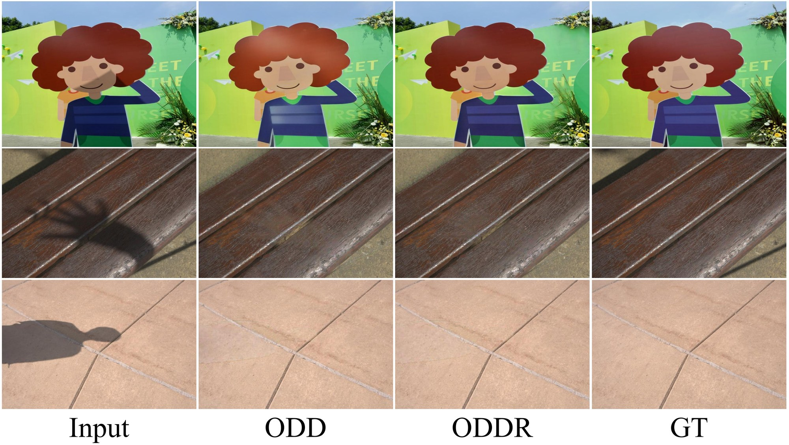

Abstract
Recent advances in deep learning for shadow removal have significantly enhanced image quality and realism. However, most approaches rely on real-world paired datasets, which are costly to collect and often limited in scene diversity, leading to limited generalization. To address these limitations, we propose One-step Deshadow Diffusion via Reward guidance (ODDR), a new framework that achieves efficient and high-fidelity shadow removal without relying on real-world paired supervision. Our method begins with One-step Deshadow Diffusion (ODD), a baseline model trained on synthetic shadow data for efficient one-step shadow-free reconstruction. We further adapt ODD into ODDR using ShadowReward. In contrast to traditional, annotation-heavy approaches, ShadowReward is the first reward model for shadow removal trained entirely without human annotation. It learns to mimic human perceptual judgments by ranking synthetically generated images with controlled degradations, such as texture distortion and boundary artifacts. This reward-guided fine-tuning enables ODDR to close the synthetic-to-real domain gap. Extensive experiments show that ODD achieves strong performance without relying on real-world paired supervision, and ODDR further improves the results, narrowing the gap to fully supervised methods trained on real-world paired data while maintaining higher computational efficiency as a single-step model.
Method



Results



Citation
@inproceedings{shin2026oddr,
title={ODDR: One-Step Deshadow Diffusion via Reward Guidance},
author={Junseong Shin and Kijun Kim and Min Seong Kim and Dongjin Kim and Tae Hyun Kim},
booktitle={Advances in Neural Information Processing Systems (NeurIPS)},
year={2026}
}